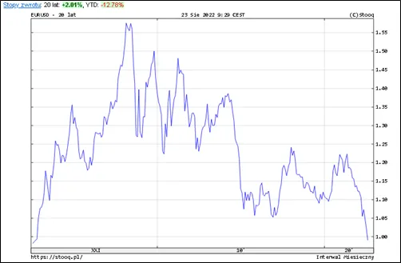
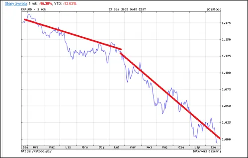
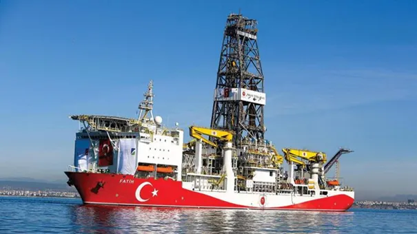

Euro-juan od kiedy?
Tylko 99 centów amerykańskich kosztuje jedno euro, dwa dni temu było odwrotnie. Po 20. latach psychologiczna bariera została przekroczona. Pierwszy wykres to 20 lat euro do dolara.

Drugi wykres pokazuje ostatni rok z liniami trendu do lutego 2022 i od lutego do dziś.

Europa jest w energetycznym potrzasku. Zastąpienie rosyjskiego gazu nie jest proste. Zielony ład spowodował, że przestano inwestować w przemysł rafineryjny a są to inwestycje duże i długoterminowe. Gdy cały zachodni świat inwestuje w drogie, zielone technologie Azja buduje nowe kopalnie i wierci szyby naftowe.

Zupełnie naprzeciw trendom Turcy rozbudowują swoja flotę statków poszukiwawczych. Obecnie 4 takie pływające wieże odkrywając coraz to nowe złoża na Morzach Czarnym i Śródziemnym. Przez 50 lat po wojnie ropy i gazu nie było nigdzie poza Zatoką Perską i w USA. Obecnie Stany nie mają już takiej politycznej siły, by zamykać konkurencyjne odwierty. Turcja, niedawno kraj bez paliw, obecnie jest kluczowym kanałem dostaw z Azji do Europy i zaczyna pompować swoje własne złoża. Azja zadusi europejski przemysł europejskimi mrzonkami o darmowej zielonej energii. W lipcu w UE odblokowano inwestycje w energię jądrową, ale od pomysłu do zakończenia inwestycji, to blisko dekada. Tymczasem Rosjanie w Turcji kończą już pierwszą elektrownię jądrową i na horyzoncie są już dwie kolejne. Idziemy w azjatycki jasyr bez jednego strzału. Jest jedna opcja, EU może otwarcie stanąć z Chinami przeciw USA. W praktyce byłby to euro-juan, wspólna cyfrowa waluta oparta o faktyczne zasoby gospodarki. Oczywiście to Chiny miałyby 100% nadzór nad naszymi cyfrowymi portfelami. Głupio wyszło…